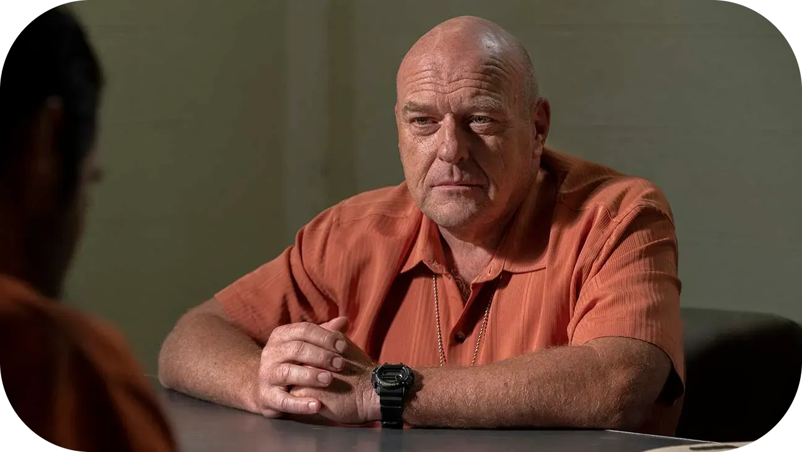

Hank Schrader
Hank Schrader, interpretado por Dean Norris, é um dos personagens principais de Breaking Bad e desempenha um papel essencial como cunhado de Walter White e agente do DEA (a agência antidrogas dos Estados Unidos). Hank é inicialmente apresentado como uma figura carismática e confiante, muitas vezes o centro das atenções em reuniões familiares devido à sua personalidade extrovertida e senso de humor robusto.
Como agente do DEA, Hank é dedicado e extremamente competente, liderando investigações importantes no combate ao tráfico de drogas em Albuquerque. Ironicamente, ele se torna um dos principais responsáveis por perseguir o misterioso traficante conhecido como "Heisenberg", sem saber que o criminoso em questão é o próprio Walter. Essa tensão crescente entre os dois é um dos elementos mais fascinantes da série.
Ao longo da trama, Hank enfrenta desafios pessoais significativos. Após ser gravemente ferido durante um tiroteio com membros do cartel, ele sofre um longo e doloroso processo de recuperação física e emocional. Essa experiência o humaniza e mostra sua vulnerabilidade, destacando seu lado mais resiliente e determinado.
O momento mais impactante para Hank ocorre quando ele descobre a verdadeira identidade de Heisenberg. Essa revelação não só destrói sua confiança em Walter, mas também coloca em risco sua carreira, sua segurança e até mesmo sua vida. Determinado a levar Walter à justiça, Hank embarca em uma jornada perigosa e emocionalmente desgastante.
Hank Schrader é mais do que apenas um "homem da lei" estereotipado. Ele é um personagem multifacetado, com humor, força e uma bússola moral inabalável. Sua relação com Walter e sua busca pela verdade culminam em um confronto emocionante e trágico, marcando um dos momentos mais memoráveis de Breaking Bad. A atuação de Dean Norris é amplamente elogiada, trazendo autenticidade e profundidade ao papel de Hank.